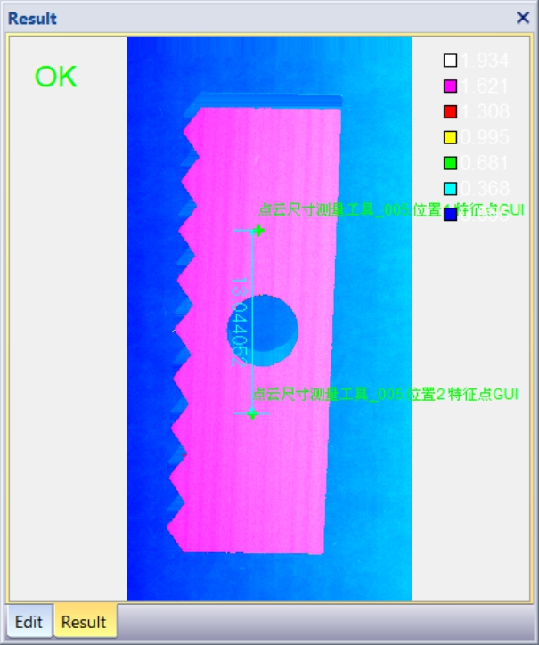
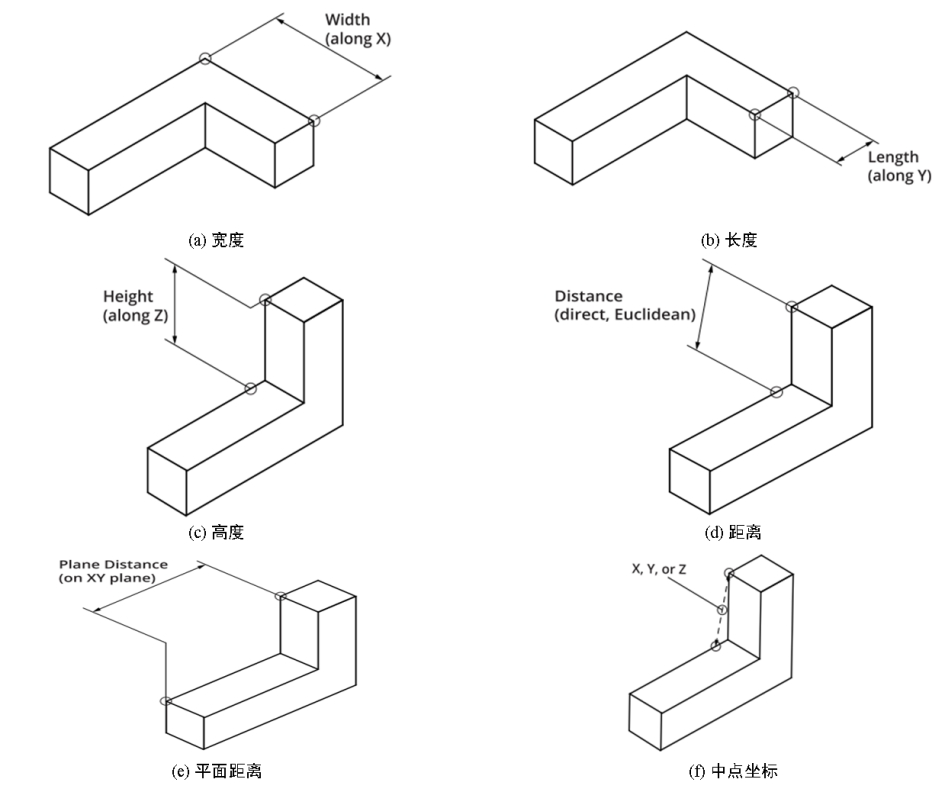

Đo thông tin kích thước giữa hai điểm đặc trưng trong ảnh độ sâu, Hình 1 minh họa thông tin chiều dài giữa hai điểm đặc trưng.

| Phân loại | Tên tham số | Mô tả tham số |
|---|---|---|
| Cửa sổ thuộc tính | Loại đặc trưng kích thước | Loại kích thước của dữ liệu độ sâu, dùng để tính khoảng cách hoặc trung điểm giữa hai điểm đặc trưng, được chia thành 6 loại: chiều rộng, chiều dài, chiều cao, khoảng cách Euclid, khoảng cách phẳng, trung điểm. |
| Bù hệ số | Bù hệ số cho kết quả đo, thông thường là 1, dùng để bù sai số hệ thống như sai số tạo ảnh. | |
| Bù cố định | Bù cố định cho kết quả đo, thông thường là 0, dùng để bù sai số hệ thống như sai số tạo ảnh. | |
| Giới hạn dưới của dải ngưỡng | Giá trị giới hạn dưới của điều kiện phán định, phạm vi giá trị: [-100000,100000], đơn vị: mm. | |
| Giới hạn trên của dải ngưỡng | Giá trị giới hạn trên của điều kiện phán định, phạm vi giá trị: [-100000,100000], đơn vị: mm. | |
| Cửa sổ hình ảnh | Ảnh độ sâu | Hiển thị ảnh độ sâu cần kiểm tra, được hiển thị dưới dạng ảnh giả màu. |
| Liên kết dữ liệu | Ảnh độ sâu đầu vào | Nhập ảnh độ sâu cần kiểm tra. |
| Biến đổi tuyến tính 2D | Biến đổi tịnh tiến, xoay và thu phóng của đối tượng so với mẫu. | |
| Giao diện nâng cao | Không có | Không có |
| Phân loại | Tên tham số | Mô tả tham số |
|---|---|---|
| Cửa sổ giám sát | Ảnh độ sâu đầu vào | Chiều dài, chiều rộng và kích thước pixel của ảnh đầu vào, cùng với các tham số dữ liệu độ sâu. |
| Vị trí 1 | Thông tin tọa độ 3D của điểm đặc trưng thứ 1. | |
| Vị trí 2 | Thông tin tọa độ 3D của điểm đặc trưng thứ 2. | |
| Kết quả kích thước | Chiều rộng/chiều dài/chiều cao/khoảng cách Euclid/khoảng cách phẳng/trung điểm giữa hai điểm đặc trưng. | |
| Kết quả thực thi | Kết quả thực thi của công cụ. | |
| Thời gian thực thi | Thời gian thực thi của công cụ. | |
| Cửa sổ hình ảnh | Ảnh độ sâu đầu vào | Hiển thị ảnh độ sâu đã kiểm tra, được hiển thị dưới dạng ảnh giả màu. |
| Điểm đặc trưng, khoảng cách/trung điểm | Hiển thị kết quả điểm đặc trưng, và khoảng cách hoặc trung điểm giữa hai điểm đặc trưng. | |
| Liên kết dữ liệu | Giống với tham số trong cửa sổ giám sát, dùng cho các công cụ tiếp theo. |
Bước 1 Thiết lập loại kích thước dữ liệu độ sâu
Để lấy khoảng cách giữa các điểm đặc trưng của dữ liệu độ sâu hoặc thông tin tọa độ trung điểm, cần thiết lập loại kích thước của dữ liệu độ sâu. Loại kích thước của dữ liệu độ sâu có 6 loại: chiều rộng, chiều dài, chiều cao, khoảng cách Euclid, khoảng cách phẳng, trung điểm, như trong Hình 2.

Bước 2 Thực hiện đo và xuất kết quả
Sau khi thiết lập xong loại kích thước dữ liệu độ sâu, có thể thực hiện đo. Kết quả đầu ra bao gồm thông tin tọa độ 3D của hai điểm đặc trưng, thông tin kích thước giữa hai điểm đặc trưng hoặc thông tin tọa độ trung điểm của chúng.
Không có
参见“\Samples\3D\深度图\3D测量工具.gvp”。